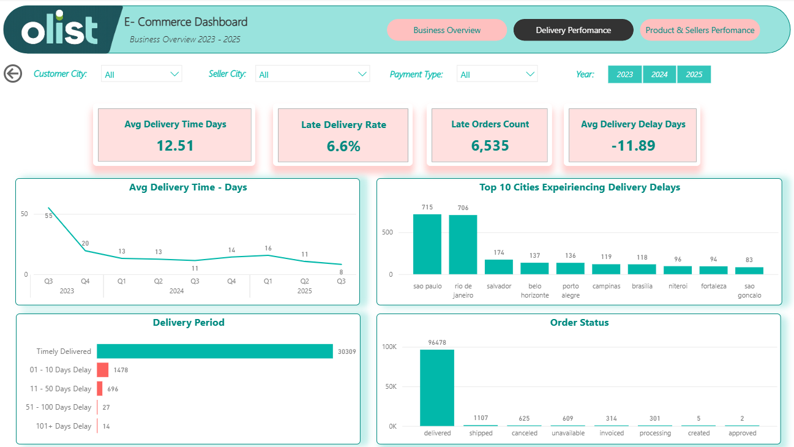
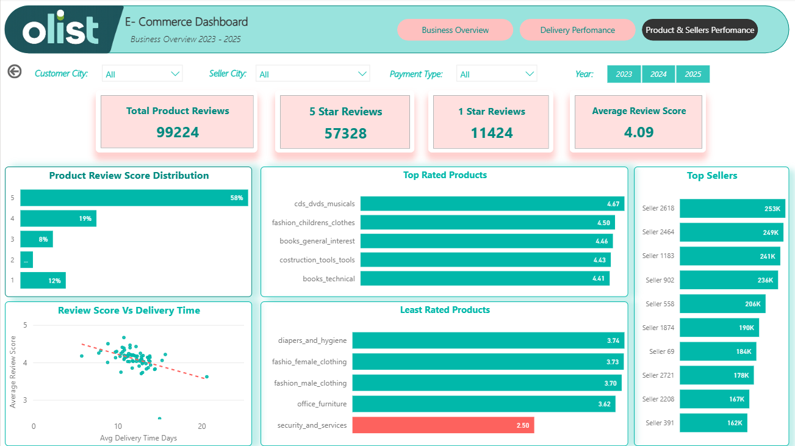

Power BI Project
Olist E-Commerce Analysis
Introduction
This project is an end-to-end Power BI dashboard built using the Brazilian E-commerce public dataset by Olist. I cleaned and transformed the data, designed a star schema data model, and created DAX measures and KPIs to analyze sales, customer behavior, product and delivery performance.
The dashboard includes interactive features such as slicers, filters, drills, making it easy for users to explore the data evaluate store performance, identify opportunities for improvement, and enhance overall customer satisfaction.
Data Analysis Goals
1. Analyse product, sales and revenue performance over time.
2. Analyze product delivery performances.
3. Analyze customer satisfaction ratings to uncover opportunities and improve customer satisfaction.
About Dataset: The dataset contains approximately 100,000 orders from 2023 - 2025 (Original dataset have 2016 to 2018) made at Brazilian e-commerce platform. The database contains 9 tables with information about orders, products, customers, sellers, payments, reviews and geolocation. The dataset is available on Kaggle at This link.
Tools Used: Power BI
Data Cleaning
After importing the dataset into Power BI, I performed data cleaning and transformation using Power Query Editor. By promoting headers to some table which were not automatically detected by Power BI.
Changes data type to appropriate types, removing corrupted or irrelevant data and replacing jargons with proper names.

- Total Revenue; 16,008,872.00 BRL
- Consistent growth in revenue over time, with a peak revenue in Nov 2024.
- Total Deliveries 96,478 with about 625 canceled oders
- 12.5 average delivery days
- 6,535 orders delivered late, with a rate of 6.7% of total orders, indicating a need for improved logistics and delivery management.
- About 41 orders were delivered after 50 days, which is a significant delay and may lead to customer dissatisfaction.
- A total of 99,224 reviews were collected
- 57,328 (58%) gave a 5-star rating, indicating a high level of customer satisfaction
- 11,424 (12%) gave a 1-star rating, indicating areas for improvement in product quality or service.
- Average review score of 4.09 out of 5, indicating a generally positive customer experience.
- The review score dcreases and the product delivery time increases, indicating that customers are more likely to leave negative reviews when their orders are delayed.
- Top 5 products by revenue include CDs and DVDs, Fashion chirdren's clothing, Books and Construction tools are the most popular product categories, indicating a diverse range of products offered by the e-commerce platform.
- The least popular product category are security services with a rating of 2.5 out of 5.


- Priotize the delivery of orders to ensure timely delivery and improve customer satisfaction.
- Analyze top-selling and high-demand products to identify growth opportunities and learn from the best practices and replicate the strategies of successful sellers.
- Analyze delivery delays and undelivered orders to uncover geographic factors affecting freight costs and delivery performance.
- Analyze cancelled orders and unavailable products to identify fulfillment issues and opportunities to improve customer satisfaction.
Summary
Generally, Olist can improve its delivery and supply chain performance by continuously monitoring customer reviews, tracking delivery operations in real time, and strengthening shipment tracking and customer communication.
These improvements can help reduce delivery issues, enhance operational efficiency, and increase overall customer satisfaction.